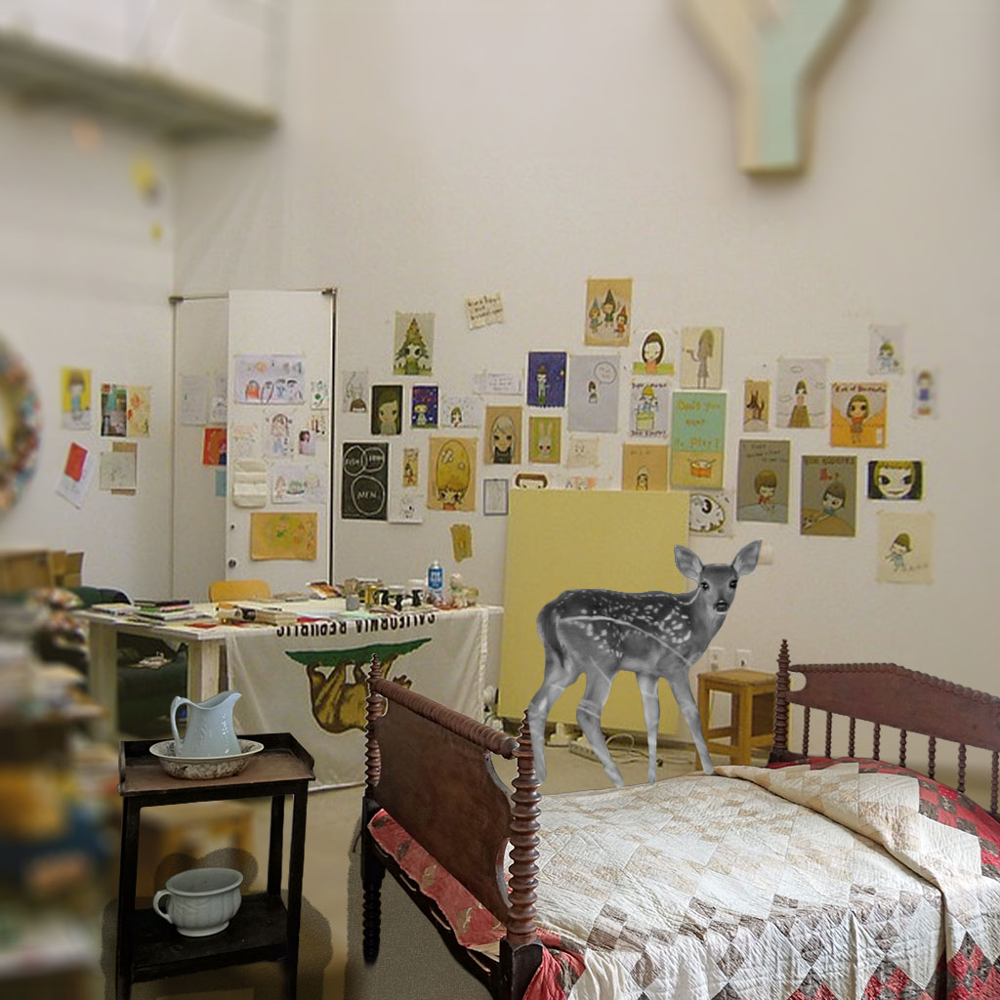

This is what Cora's mind looks like from the inside. Memories cover its walls like paintings, while forgotten thoughts linger in every corner. At the center stands her spirit deer, a quiet guardian leading her through the emotions she has never let go of. It is a place where nothing disappears—every experience leaves a mark, and every mark becomes part of her soul.
